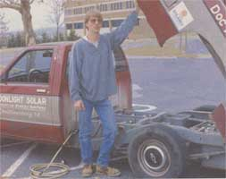
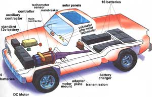
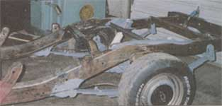
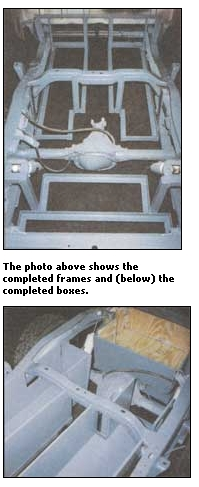
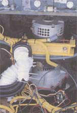
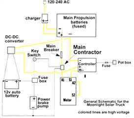
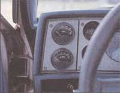
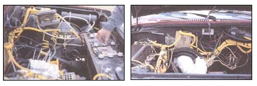
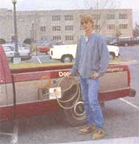

The Eternal Engine
February/March 1997
ENERGY & ENVIRONMENT
Replacing an aging engine with an electric model will save time, money, energy, and headaches.
by Tom Moates
While there are several types of vehicle conversions possible - such as Dave Arthur's hybrid electric car (see MOTHER'S June/July '93 issue); or using propane or even wood-produced steam to replace your existing combustion engine with a clean-burning, reliable powerplant - converting to an entirely electric vehicle has become a very reliable and cost-effective means of transportation for the commuter. In fact, many city governments have electric vehicles in their fleets and electric forklifts have been in the workforce for well over a decade.
Brian Walsh is an alternative energy expert and has recently converted a Chevy S-10 pick-up as a pilot vehicle for his company Moonlight Solar, Inc. This truck has been on the road now for a year, running without a problem and, according to Walsh, that's the point ...while electric vehicle conversions have certain components that are costly, once converted, the vehicle is not only quiet and non-polluting but has no real maintenance except for normal brake replacement, occasional battery water level checks, and brush changes in the electric motor every 80,000 miles (which costs a whopping $80). That's right, there's no longer an engine, carburetor, catalytic converter, exhaust system, radiator, starter, hose, or belt. This means that there's no oil to change and no anti-freeze needed, also reducing the need for fluids toxic to the environment.
The conversion process explained in detail here is based on the Moonlight Solar truck conversion. Notice that none of the cargo space in the truck has been compromised, unlike Dave Arthur's truck where batteries, a generator, and an engine all are piled in the bed. Walsh's truck has batteries tucked away nicely in boxes under the bed and hood and there are no extra internal combustion engines or generators to install as with hybrid vehicles.
Converting a vehicle completely to electric in this manner means removing the internal combustion engine altogether and installing an electric motor, the components necessary to operate the motor, and batteries. An EV (electric vehicle) of this type must be charged for several hours and then enjoys a traveling radius from 50 to 150 miles (depending on factors such as weight, number of batteries, and type of batteries), making it only suitable for commuter travel. In the near future, however, a new type of battery called a zinc-air battery should be available which is reputed to double the range of an electric vehicle for the same weight. These batteries are already in use in vehicles in Germany (see "Bits & Pieces" in MOTHER's Feb/Mar '96 issue).
While the range threshold makes an EV most suitable for commuter travel, this should not be confused with lack of power. Riding in the Moonlight Solar truck, one is struck by how much power it has; it can literally leap from a stop. Walsh explains, "We converted a truck to show people that electric vehicles aren't just one-Beaters with bicycle tires." And seeing him buzz through town loaded down with building materials or electrical supplies is testimony to the success of this venture.
The costs for running an EV converted in this way is amazingly low. For instance, with gas prices now running about $1.20/gallon, the average vehicle would require about $4.80 in fuel cost to go 100 miles. The average EV charged at the current average grid power rate would cost 75 cents for that same 100 mile trip. But Walsh maintains that the true savings come from the lack of maintenance; after all, virtually every part particular to internal combustion motors are no longer part of the vehicle and there is very little to go wrong with the conversion components.
Finding the Components
The reasonably seasoned, generally skilled do-it-yourselfer can tackle an EV conversion, but there are certain components that must be purchased and these should not be skimped on. Some of these may be available in surplus catalogs or used from some industrial suppliers but finding them will take a bit of scrounging and they all are available new from EV, forklift, or industrial supply companies.
First is the propulsion motor. You will need either a DC motor or an AC motor coupled with an inverter. Most motors are rated at 120 volts and come either as an eight- or nine-inch motor - the eight-inch for vehicles up to 2,500 lbs. before conversion and the nine-inch for vehicles up to 3,000 lbs. Best for the home builder (also the type used in the truck and stressed in this article) is the DC series wound motor - it is more efficient than a brushless type DC, with more power for the weight and it's infinitely simpler to configure than an AC motor/inverter system. There are used motors out there, many powering large industrial equipment, but if you buy a new one expect to pay $1,200 to $1,400.
Next you must find a controller. This piece controls the activity of the propulsion motor and must match the characteristics of the motor and be properly sized for the vehicle you are propelling. When looking for a controller, make sure the one you get is matched for the voltage of the battery bank in the vehicle (or larger) and it must have enough amperage to propel the vehicle from a stop. The amperage rating must be three to five times normal cruising amperage to be road worthy - 400 amp for light cars is acceptable (the Moonlight truck is rated at 500 amps). The best brand controllers to purchase are Curtis and GE as they have been around for a long time and are continually updating the equipment. Expect to pay $800 to $1,300 for a good controller, remembering always that skimping in this area will produce a vehicle that is not roadworthy.
Another very specific part is the adapter plate which goes between the electric motor and the bell housing/transmission of the vehicle being converted. A local machinist may be able to build one of these for you, but it is definitely a job for a professional. Prefabricated adapter plates are on the market for hundreds of different vehicles. Moonlight Solar handles these items as do several other EV conversion companies around the country.
The final specialty component may surprise you - the battery charger. Realize that the large battery banks of an EV produce voltages around 120 and chargers that operate at that high voltage only are found from forklift or EV dealers. The Moonlight Solar truck is equipped with an inboard charger allowing Walsh to charge anywhere a regular electrical socket is handy - he opens the fuel tank cap and pulls out a cord. At home, however, he "tanks-up" the truck with a larger charger reducing the time necessary for a full electrical load, and you may wish to install this same set-up.
The rest of the components are more readily available and can be found locally or through surplus catalogs and stores.
Batteries come basically in two types, lead acid and nickel cadmium. Lead acid are the most common, are compact, and are one-tenth the cost of ni/cads. The only real advantage to the ni/cads is that they do not lose range in cold temperatures as lead acid batteries do. Note also that the batteries here are not normal automotive batteries which are rated in cranking amps but rather they are deep cycle, EV, or golf cart batteries and have a "minute" rating. Most fall between 110 and 145 minutes which is how long their charge will last at a 70 amp discharge.
Battery requirements for an EV are typically figured as such:
Twelve 6-volt batteries (72 volt) ...strictly city use, no high speeds, or...
Sixteen 6-volt batteries (96 volt) ...more standard operation, or...
Twenty-plus 6-volt batteries (120 volt) ...hilly operation or larger vehicles.
Power - Acceleration and ability to climb hills is related to voltage which corresponds directly to the number of batteries in the vehicle.
Range - This is determined by the overall storage capacity of the battery bank, not necessarily the number of batteries.

Wiring
Good wiring techniques are essential to proper performance and low maintenance in an EV. Always check wires, screws, bolts, buss, etc. at each junction at the time of connection for problems. Wires should be kept short between components and should have proper ends crimped, soldered, and then taped or (best of all) shrink wrapped. When bolting connections together it is always best to shine up the connections with sandpaper first. Connections can become corroded causing loss of power or malfunction, so take the greatest care to prevent this.
The schematic shows how the components of the Moonlight Solar truck are wired, which is similar to any EV, especially other conversions using the DC series wound motor. Low and high voltage wire types are given in the diagram and each corresponding connection must be wired with the appropriate cable as inadequate wires will heat up causing current loss or more serious problems. Stick with copper wire; aluminum is much less preferable and requires larger sizes for the same load as copper. When running wires around the vehicle always tie or clamp them neatly out of the way to con partment walls or frame. It adds to the showpiece of your handiwork, helps avoid wire damage, and makes future maintenance and changes much simpler.
Connecting batteries to one another is a very important part of the overall system. Use 2/0 welding cable with professionally crimped lugs and "L" type battery terminals for bolting the cables down rather than the round post automotive type terminal connectors. This allows for a tighter connection with a larger surface area. Also adequate, and probably less expensive than the cable would be a copper buss (1/8" x 1" strip) or a thick copper tubing with flattened ends with drilled bolt holes to go between batteries.
Between the batteries and the main contact there must be either a 250 amp DC rated breaker made by Heiman (which is the cat's meow of breakers - very easy to click on and off) or a 300 amp DC rated GE breaker. This breaker must be accessible to the driver in case it trips while the vehicle is in operation. Also for safety, 400 amp rectifier fuses should be placed between batteries - one in each compartment set. These will never blow unless there is a major problem, but if there is such a problem you will be ecstatic to have had that fuse inline. The truck has three such fuses, one in each battery compartment.
The main contactor is an electromagnetic contactor, a remote switch, which allows main battery power to go to the breaker and then the controller. This switch completely disconnects all power from reaching the motor when the key is off and for a couple other safety reasons described in the wiring section later. The main contactor in the truck is made by Albright.
You will also need to scrape up an electric heater. These are generally pretty efficient and shouldn't be hard to come by.
Battery enclosures must be installed in the vehicle and must be stout. 1 1/4" angle iron welded with 1/8" plate bottoms welded to frame or within the body with plywood sides are good. Angle top strap or some other significantly structural top to avoid battery tipping or movement over large bumps is critical. For lead acid operation in colder climates adding insulation and small heaters which come on during charging will help range considerably.
Beefing up shocks and springs may be necessary, especially in the end of the vehicle where the weight ratio is not offset by the removal of the internal combustion engine. Adding leaves to leaf springs, going from shocks to spring-over shocks or adding air shocks are all simple alternativesto this need. Note, however, that if you choose the air shock route, the vehicle must have enough clearance to travel even when the air shocks are not pumped up due to shock damage or malfunction.
If your vehicle is equipped with manual brakes, simply keep them as they are. For power breaks you can either convert to manual breaks or install a vacuum pump and air chamber (built from three-inch PVC pipe with capped ends) which will operate the power breaks.
The instrumentation will change. At the very minimum the vehicle needs an amp and a volt meter which allows the driver to monitor battery charge and the amount of load on the motor. Additionally you may install a temperature gauge, a tachometer, and/or an amp/hour meter.
Relays (remote switches) may serve several roles in a conversion vehicle. Turning on circuits for the controller or vacuum pump or disconnecting an onboard charger are good uses for these switches.
Also helpful is the inclusion of a standard 12-volt car battery to run auxiliary equipment like radio, windshield wipers, and headlights. To charge this battery the Moonlight Solar truck has two solar panels mounted on the hood (or roof as indicated by the diagram on WIRING ), but a DC to DC converter running off the main charger may also be used.
That is a basic walk through the various components. Many of them can be scrounged, but always keep quality and condition in the front of your mind when acquiring the various parts. It can make the difference between happy motoring and a nightmarish breakdown or poor performance.
Finding a Vehicle to Convert
Any vehicle can be converted to electric and be outfitted with just about any extra equipment imaginable, but there are definite pros and cons to take into consideration if you want good range and a simple, minimally expensive conversion.
Manual, rack and pinion steering is a big pro. It works well and puts no extra strain on the battery banks. Power steering is not a complicated addition (requiring only an extra vacuum pump and air chamber), but costs considerably more and reduces the range of the vehicle by 10-15 miles per charge.
Manual transmissions are preferable. They simply remain in the vehicle as originally installed with no fuss. Automatic transmissions must have a pump installed to pressurize the transmission fluid, again reducing range, or the torque converter must be removed detracting from the smoothness of the ride. Also note, as explained later, that with an EV, manual transmissions function like automatics when stopping and starting anyway.
Air conditioning is also possible, but again you're going to need big bucks and have to endure a significant reduction in range per charge.
Pick-up trucks, like the Moonlight Solar S-10, as it turns out, make a super easy home conversion. There is adequate space for components and room enough to work on everything. Also quite easy are VW Rabbits (probably the all-time favorite EV conversion), VW bugs for a short range EV (as battery space is limited), and small cars like the Geo Metro, which have superb range due to their lightness.
Some automobile companies are also offering what are called "gliders." This is a brand-new regular automobile right off the assembly without any internal combustion components, making an EV conversion more practical and affordable than buying the whole completed thing and dismantling it - but they are bound to be more expensive than a sound used vehicle with a blown motor.
Converting the Vehicle
This is a list of the steps in converting a mainstream gas guzzler to a quiet, peppy EV They are straightforward, but much of the job will be the result of how you use your common sense and finesse to adapt these principles to the particular vehicle before you.
* Weigh front, rear, and total vehicle weight. It sounds strange but will allow you to asses the weight ratio of the conversion, allowing it to perform optimally. The local quarry or dump should have scales and a quick phone call will let you know a good time to drop by for such a visit.
* Mark all wires. If you do this as you disconnect all parts of the existing vehicle order it can save many headaches when reassembling the new EV order.
Find out which direction the internal combustion engine rotates by bumping the starter. You will need this so that the electric motor can be wired to turn the proper direction.
Measure the position of the transmission in relation to the frame and firewall so that you have a way to judge that it returns to the same spot when outfitted with the new motor and adapter plate.
Pull motor.
Do away with:
exhaust system;
gas tank and lines;
radiator, hoses, and all cooling system;
all air pumps and emission system and all extraneous hangers, brackets, and unnecessary weight.
Clean and paint engine compartment.
Think about battery placement. In the truck there are three compartments, one under the hood and two attached to the frame in the rear under the bed. Using cardboard mock-ups of correctly sized battery compartments helps to visualize their placement. Also keep in mind the size and placement of the electric motor when trying to figure battery placement under the hood.
Weld in any battery boxes which do not inhibit installation of electric motor. Do not compromise the integrity of the frame in any way when undertaking this step.
Design bolt-in-place battery boxes for those in the way of motor installation which can be removed when installing motor.
Install hub to motor.
Attach flywheel to hub.
Secure motor (still outside of vehicle) and test to 5,000 RPM for balance. If out of balance take flywheel to machine shop for balancing.
Attach transmission to motor with adapter which goes between bell housing and the electric motor and install in a temporary fashion, getting the transmission back to where it was originally using the measurements taken earlier.
Fabricate motor mounts which will hold the electric motor in place and attach to existing motor mounts.
Install a torsion bar from the motor adapter plate to frame. Also called a "dog bone," these come in various sizes and may be purchased at most auto parts stores.
Beef up suspension (discussed earlier).
Mount the controller in a good spot which has some airflow to help cool the component.
Find good spots for and mount main contactor, main breaker, gauges, relays, etc.
Connect accelerator to controller. There are two basic ways to go about this. Either use the old cable and connect it so that it pulls on the "pot box," which should be included with the controller, and configure a spring to pull the cable back so that it functions like a normal accelerator pedal; or you can purchase an accelerator pot box that mounts to the floor, taking the place of the existing pedal, and then only needs to be wired to the controller.
Connect low-voltage circuits to light, windshield wipers, radio, power brake vacuum pump, and any other 12-volt apparatus you may have.
Wire in any extras you may have.
Run all main wires.
Install batteries, wiring them tightly and carefully together, installing one 400 amp rectifier fuse between the middle two batteries, one per compartment, and bolting compartment tops properly in place.
Make the final wire connection a positive battery connection with the main breake r off.
And that is the basic blueprint for electric vehicle conversion. You should now be able to flip the main breaker on, turn the key, put it in gear, gently depress the accelerator, and ease the newly converted EV into motion. You will quickly realize that even vehicles equipped with manual transmissions accelerate from a stop like automatics, as it is not necessary to depress the clutch when stopping or starting; unlike the internal combustion engine, which must always spin when running, the electric motor only turns when propelling the vehicle. Also, there is no noise at all from the vehicle when it rests at a stop, so do not become confused, press the gas, and leap forward into traffic or a garage door. Walsh found the Moonlight Solar S-10's operation in foul weather greatly improved after the conversion, since the battery weight was distributed throughout the vehicle and not concentrated in the nose as the internal combustion configuration had it.
While an EV conversion requires an investment of time and money, the result is a fantastic commuter vehicle that greatly reduces maintenance, fuel cost, and impact on the environment. Also, the EV is less disposable - expect to get hundreds of thousands of miles from your components rather than the normal hundred and fifty thousand of the internal combustion vehicle. Long distance travel in EVs also may be closer than you realize, as talk of electric quick-charging stations along major routes has begun. This awareness of EVs will certainly continue, and people who convert vehicles today assert their belief in a more sustainable mode of travel and pave the way for larger changes to follow.
For more information on EV conversions, contact Moonlight Solar at 540-381-4971.
|
 Brian Walsh showing the customized bed of his EV truck and part of the battery bank within. |
 Placement of the battery boxes was critical. The photo above was taken just before starting to weld the battery box frames |
 The photo above shows the completed frames and (below) the completed boxes. |
|
 View of the motor and part of a bank of deep-cycle 6-volt rechargeable batteries. |
 Bare-bones instrumentation is an amp and volt meter measuring charge and current power load. |
 Although the Chevy S-10 truck was ideal for conversion, any vehicle can be a candidate as long as it has space enough for the engine components and battery banks |
|
 Folks may do a double-take the first time they see you ""gassing"" up you EV. Expect gawkers. |
 |
 |